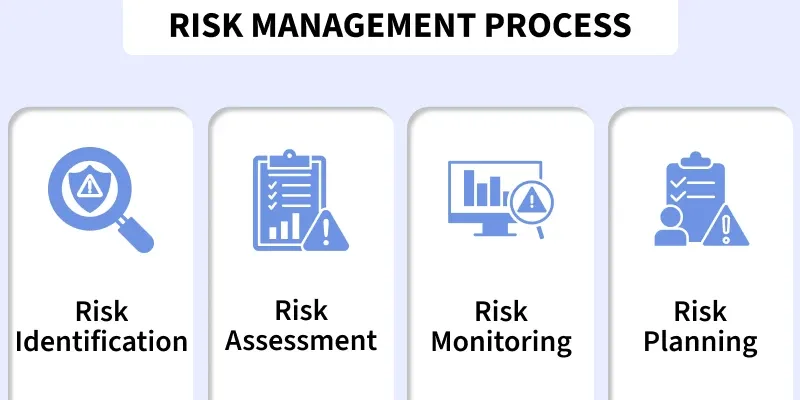
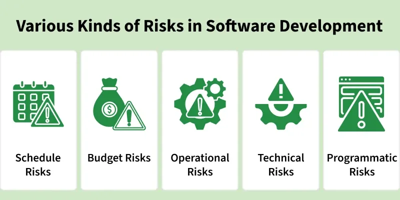

3.8 Software Risk Analysis & Management
Software risk analysis and management is the process of identifying risks that could negatively impact a software project's success, assessing their likelihood and consequences, and taking steps to reduce them to an acceptable level. A risk is an uncertain future event that has a probability of occurring and may harm the project in terms of cost, schedule, quality, or performance if it materialises.
Risk management is a core SPM activity and also integrates with the SDLC — especially in the Spiral model where risk analysis is built into every cycle (see Topic 2 §2.18). This section focuses on the SPM perspective: how the project manager handles risk as part of planning and control.

Three categories of software project risk
Risks are classified into three main categories for systematic identification:
- Project risks: These threaten the project plan itself — schedule slippage, budget overrun, resource shortages, and personnel turnover. Schedule slippage is especially common in software because the product is intangible and progress is hard to observe.
- Technical risks: These threaten the quality or performance of the software — design flaws, integration failures, technology obsolescence, insufficient testing, and high implementation complexity.
- Business risks: These threaten the product's viability in the market — changing customer needs, competitor products, regulatory changes, and loss of management support or funding.
Exam example: In a satellite-based mobile communication project, a project risk is schedule delay due to integration problems; a technical risk is failure of the communication protocol under load; a business risk is a competitor launching a similar service first.

Common examples of risks in each category include:
- Project risks: Schedule slippage, budget overrun, loss of key staff, unrealistic deadlines.
- Technical risks: Frequent requirement changes, unproven technology, insufficient skilled developers, high implementation complexity, improper module integration.
- Business risks: Competitor products, loss of funding, changing market needs, regulatory changes.
Risk management process
The risk management lifecycle consists of five continuous steps:
- Risk identification. The team brainstorms and documents all potential risks, noting their source and the SDLC phase they would affect. Output: a risk register.
- Risk analysis. Each identified risk is analysed for its likelihood of occurrence, severity of impact, and triggering conditions. Analysis can be qualitative (high/medium/low) or quantitative (numerical probability and cost).
- Risk assessment / evaluation. Risks are compared against predefined acceptance criteria and prioritised. High-probability, high-impact risks demand immediate attention; low risks may be accepted and monitored only.
- Risk mitigation. The team selects a strategy for each important risk: avoid (change the plan to eliminate the risk), transfer (shift responsibility, e.g. insurance or outsourcing), mitigate (reduce probability or impact), or accept (acknowledge and monitor). Contingency plans are prepared for risks that cannot be fully eliminated.
- Risk monitoring. Identified and mitigated risks are tracked throughout the project lifecycle. New risks are added as they emerge. Monitoring is ongoing, not a one-time activity.
Risk exposure and prioritisation
Risk exposure = Probability × Impact. Risks are ranked by exposure and plotted on a probability–impact matrix so the manager can focus resources on the highest-exposure items first. This quantitative approach complements the three-set framework covered in Topic 2 §2.18.
Common software project risks
Examiners frequently ask for examples. Typical risks include:
- Frequent or incomplete requirements changes.
- Use of unproven or rapidly changing technology.
- Insufficient skilled personnel on the team.
- High complexity in design or module integration.
- Security vulnerabilities discovered late in testing.
- Loss of a key team member during critical development phases.
Goal of risk management
In summary, software risk analysis and management aims to anticipate what might go wrong and prepare a response before crises occur. Effective risk management increases the probability of delivering the project on time, within budget, and to the required quality. The success or failure of a software project often depends more on how well risks are handled than on the technical skill of the developers alone.
Q: What is software risk management? Describe the process and classify risks with examples.
Model answer points:
- Define risk as uncertain event with probability and negative impact on cost, schedule, or quality.
- Three categories: project (schedule, budget), technical (design, performance), business (market, funding).
- Five steps: identification → analysis → assessment → mitigation → monitoring.
- Mitigation strategies: avoid, transfer, mitigate, accept; include contingency plans.
- Risk exposure = probability × impact; use risk matrix for prioritisation.
- Link intangibility of software to schedule slippage as a major project risk.
- Cross-reference Spiral model (Topic 2 §2.18) for SDLC integration.